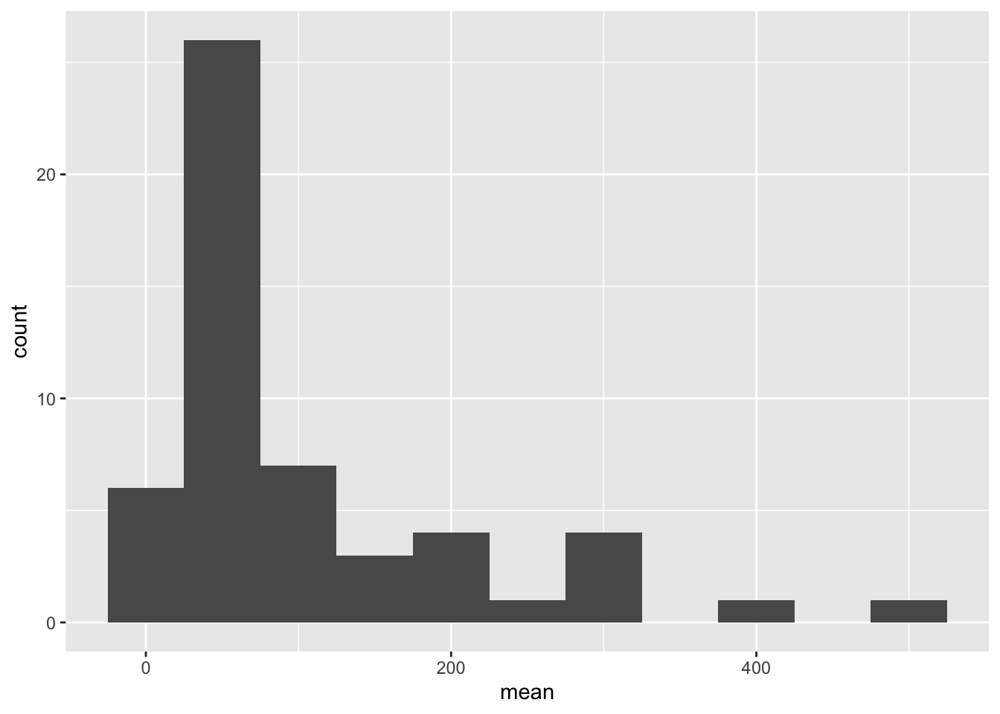

Code
library(tidyverse)
library(readxl)
knitr::opts_chunk$set(echo = TRUE, warning=FALSE, message=FALSE)Prasann Desai
June 6, 2023
Today’s challenge is to
Read in one (or more) of the following data sets, available in the posts/_data folder, using the correct R package and command.
# A tibble: 6 × 5
STATE ...2 COUNTY ...4 TOTAL
<chr> <lgl> <chr> <lgl> <dbl>
1 AE NA APO NA 2
2 AE Total1 NA <NA> NA 2
3 AK NA ANCHORAGE NA 7
4 AK NA FAIRBANKS NORTH STAR NA 2
5 AK NA JUNEAU NA 3
6 AK NA MATANUSKA-SUSITNA NA 2# A tibble: 6 × 3
STATE COUNTY TOTAL
<chr> <chr> <dbl>
1 AE APO 2
2 AE Total1 <NA> 2
3 AK ANCHORAGE 7
4 AK FAIRBANKS NORTH STAR 2
5 AK JUNEAU 3
6 AK MATANUSKA-SUSITNA 2# Here we remove the null values from the county column (These rows are actually subtotal values in the excel that need to filtered from the final dataset)
# Also renamed the column names using more contexual words.
final_ds <- rename(raw_ds_v2, total_employees = TOTAL, state = STATE, county = COUNTY) %>% filter(!is.na(county))# A tibble: 2,930 × 3
state county total_employees
<chr> <chr> <dbl>
1 AE APO 2
2 AK ANCHORAGE 7
3 AK FAIRBANKS NORTH STAR 2
4 AK JUNEAU 3
5 AK MATANUSKA-SUSITNA 2
6 AK SITKA 1
7 AK SKAGWAY MUNICIPALITY 88
8 AL AUTAUGA 102
9 AL BALDWIN 143
10 AL BARBOUR 1
# … with 2,920 more rowsAdd any comments or documentation as needed. More challenging data may require additional code chunks and documentation.
Using a combination of words and results of R commands, can you provide a high level description of the data? Describe as efficiently as possible where/how the data was (likely) gathered, indicate the cases and variables (both the interpretation and any details you deem useful to the reader to fully understand your chosen data).
tibble [2,930 × 3] (S3: tbl_df/tbl/data.frame)
$ state : chr [1:2930] "AE" "AK" "AK" "AK" ...
$ county : chr [1:2930] "APO" "ANCHORAGE" "FAIRBANKS NORTH STAR" "JUNEAU" ...
$ total_employees: num [1:2930] 2 7 2 3 2 1 88 102 143 1 ...Conduct some exploratory data analysis, using dplyr commands such as group_by(), select(), filter(), and summarise(). Find the central tendency (mean, median, mode) and dispersion (standard deviation, mix/max/quantile) for different subgroups within the data set.
# A tibble: 1 × 6
mean median sd min max IQR
<dbl> <dbl> <dbl> <dbl> <dbl> <dbl>
1 87.2 21 284. 1 8207 58# Calculating central tendency and dispersion statistics of number of employees for each state
state_ds <- final_ds %>%
group_by(state) %>%
select("total_employees") %>%
summarize_all(list(mean = mean, median = median, sd = sd, min = min, max = max, IQR = IQR), na.rm = TRUE)
state_df = select(state_ds, 1, 2)
print(state_ds)# A tibble: 53 × 7
state mean median sd min max IQR
<chr> <dbl> <dbl> <dbl> <dbl> <dbl> <dbl>
1 AE 2 2 NA 2 2 0
2 AK 17.2 2.5 34.8 1 88 4
3 AL 63.5 26 130. 1 990 47
4 AP 1 1 NA 1 1 0
5 AR 53.8 16.5 131. 1 972 33.8
6 AZ 210. 94 228. 3 749 296
7 CA 239. 61 549. 1 2888 188
8 CO 64.0 10 128. 1 553 39
9 CT 324 125 520. 26 1561 167.
10 DC 279 279 NA 279 279 0
# … with 43 more rows
Be sure to explain why you choose a specific group. Comment on the interpretation of any interesting differences between groups that you uncover. This section can be integrated with the exploratory data analysis, just be sure it is included.
Few observations: a) The state-county level data has few outliers (small values) that can be filtered out using the measures of central tendency and the histogram of the ungrouped data. So, for the EDA, we filter out counties that have very less or very high number of employees. b) Most railroad offices have < 250 employees. There exist some states that lie on the very extremes. c) The mean number of employees in the states are approximately mound shaped in distribution.
---
title: "Challenge 2"
author: "Prasann Desai"
description: "Data wrangling: using group() and summarise()"
date: "06/06/2023"
format:
html:
toc: true
code-fold: true
code-copy: true
code-tools: true
categories:
- Prasann Desai
- challenge_2
- railroads
- faostat
- hotel_bookings
---
```{r}
#| label: setup
#| warning: false
#| message: false
library(tidyverse)
library(readxl)
knitr::opts_chunk$set(echo = TRUE, warning=FALSE, message=FALSE)
```
## Challenge Overview
Today's challenge is to
1) read in a data set, and describe the data using both words and any supporting information (e.g., tables, etc)
2) provide summary statistics for different interesting groups within the data, and interpret those statistics
## Read in the Data
Read in one (or more) of the following data sets, available in the `posts/_data` folder, using the correct R package and command.
- railroad\*.csv or StateCounty2012.xls ⭐
- FAOstat\*.csv or birds.csv ⭐⭐⭐
- hotel_bookings.csv ⭐⭐⭐⭐
```{r}
# Reading the excel file initally
# Observed that the first 3 rows contain meta-data, so we skip those rows
raw_ds <- read_excel('_data/StateCounty2012.xls', skip=3, col_names = TRUE)
head(raw_ds)
```
```{r}
# Here we observe that there are some unwanted columns in the dataset, so we select only those columns that we require.
raw_ds_v2 <- select(raw_ds, 1,3,5)
head(raw_ds_v2)
```
```{r}
# Here we remove the null values from the county column (These rows are actually subtotal values in the excel that need to filtered from the final dataset)
# Also renamed the column names using more contexual words.
final_ds <- rename(raw_ds_v2, total_employees = TOTAL, state = STATE, county = COUNTY) %>% filter(!is.na(county))
```
```{r}
# The final cleaned dataset looks like below
final_ds
```
Add any comments or documentation as needed. More challenging data may require additional code chunks and documentation.
## Describe the data
Using a combination of words and results of R commands, can you provide a high level description of the data? Describe as efficiently as possible where/how the data was (likely) gathered, indicate the cases and variables (both the interpretation and any details you deem useful to the reader to fully understand your chosen data).
```{r}
#| label: summary
str(final_ds)
```
- The data in StateCounty2012.xls file is the raw version of the dataset from Challenge 1.
- There are a total of 2930 records in the dataset. It contains the count of employees working at railroad office of a county in a state.
- The dataset has 3 columns -> state (short form of state name), county (name of the county) and total_employees (total number of employees working in that county).
## Provide Grouped Summary Statistics
Conduct some exploratory data analysis, using dplyr commands such as `group_by()`, `select()`, `filter()`, and `summarise()`. Find the central tendency (mean, median, mode) and dispersion (standard deviation, mix/max/quantile) for different subgroups within the data set.
```{r}
# Calculating overall central tendency and dispersion statistics of number of employees
summary_df <- final_ds %>% select("total_employees") %>% summarize_all(list(mean = mean, median = median, sd = sd, min = min, max = max, IQR = IQR), na.rm = TRUE)
summary_df
```
```{r}
# Calculating central tendency and dispersion statistics of number of employees for each state
state_ds <- final_ds %>%
group_by(state) %>%
select("total_employees") %>%
summarize_all(list(mean = mean, median = median, sd = sd, min = min, max = max, IQR = IQR), na.rm = TRUE)
state_df = select(state_ds, 1, 2)
print(state_ds)
```
```{r}
# Filtering out the extreme values from the dataset to build a histogram for distribution of #counties X total_employees
filtered_ds <- filter(final_ds, `total_employees` < 800 & `total_employees` > 20)
```
```{r}
ggplot(filtered_ds, aes(total_employees)) + geom_histogram(binwidth = 50)
```
```{r}
# Histogram of #States and mean of number of employees
ggplot(state_df, aes(mean)) + geom_histogram(binwidth = 50)
```
### Explain and Interpret
Be sure to explain why you choose a specific group. Comment on the interpretation of any interesting differences between groups that you uncover. This section can be integrated with the exploratory data analysis, just be sure it is included.
Few observations:
a) The state-county level data has few outliers (small values) that can be filtered out using the measures of central tendency and the histogram of the ungrouped data.
So, for the EDA, we filter out counties that have very less or very high number of employees.
b) Most railroad offices have < 250 employees. There exist some states that lie on the very extremes.
c) The mean number of employees in the states are approximately mound shaped in distribution.